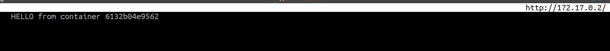

Para entender de una manera práctica Docker vamos a crear una instancia de una aplicación web plenamente funcional.
Procedimiento 6.1. Aplicación web
Primero crearemos una carpeta llamada docker_web
:# mkdir docker_web
Nos posicionamos dentro de este direcotorio con un
:# cd docker_web
Creamos un archivo Dockefile
vim Dockerfile
Ejemplo 6.1. Dockerfile
# A basic apache server. To use either add or bind mount content under /var/www FROM ubuntu:latest MAINTAINER Antonio Medina: 1.0 ENV HTTP_PROXY 'http://web-proxy.sgp.hp.com:8080' ENV HTTPS_PROXY 'http://web-proxy.sgp.hp.com:8080' COPY resolv.sh /tmp/resolv.sh RUN chmod +x /tmp/resolv.sh RUN /tmp/resolv.sh COPY 95proxy /etc/apt/apt.conf.d/95proxy COPY entry.sh /usr/bin/entry.sh RUN chmod +x /usr/bin/entry.sh RUN apt-get update && apt-get install -y apache2 && apt-get clean \ && rm -rf /var/lib/apt/lists/* ENV APACHE_RUN_USER www-data ENV APACHE_RUN_GROUP www-data ENV APACHE_LOG_DIR /var/log/apache2 ENV APACHE_LOCK_DIR=/var/run ENV APACHE_PID_FILE=/var/tmp/apache.pid EXPOSE 80 CMD ["/usr/sbin/apache2", "-D", "FOREGROUND"] ENTRYPOINT ["/usr/bin/entry.sh"]
Creamos el script de configuración del proxy para que la instancia docker pueda actulizarse e instalar los paquetes necesarios.
vim 95proxy
Ejemplo 6.2. 95proxy
Acquire::http::proxy "http://16.153.99.11:8080"; Acquire::ftp::proxy "ftp://16.153.99.11:8080";
Creamos el script resolv.sh que modificará el /etc/resolv.conf para que se adapte a la red con proxy.
Creamos el script entry.sh que se encargará de arrancar el apache automaticamente cada vez que creemos una instancia de esta imagen docker.
Ejemplo 6.4. entry.sh
#!/bin/bash export APACHE_RUN_USER=www-data export APACHE_RUN_GROUP=www-data export APACHE_LOG_DIR=/var/log/apache2 export APACHE_LOCK_DIR=/var/run export APACHE_PID_FILE=/var/tmp/apache.pid /usr/sbin/apache2 -D "FOREGROUND"
Lanzamos el proceso de creación del contenedor:
Ejemplo 6.5. Creación de un contenedor
:# docker build . # El punto es necesario.Sending build context to Docker daemon 6.656 kB Step 1/19 : FROM ubuntu:latest ---> 2a4cca5ac898 Step 2/19 : MAINTAINER Antonio Medina: 1.0 ---> Using cache ---> a8ec2d0857be Step 3/19 : ENV HTTP_PROXY 'http://web-proxy.sgp.hp.com:8080' ---> Using cache ---> 162ebdc08bfb Step 4/19 : ENV HTTPS_PROXY 'http://web-proxy.sgp.hp.com:8080' ---> Using cache ---> 7486ee9f29ee Step 5/19 : COPY resolv.sh /tmp/resolv.sh ---> Using cache ---> 33b81e4888b0 .... Step 18/19 : CMD /usr/sbin/apache2 -D FOREGROUND ---> Using cache ---> a10fc4c80db0 Step 19/19 : ENTRYPOINT /usr/bin/entry.sh ---> Using cache ---> 3977cff94b2d Successfully built 3977cff94b2d :#
Tomamos nota del id en Successfully built “3977cff94b2d”
Este es el id de nuestro build y nos servirá para lanzar nuestro flamante servidor web.
Para poder lanzar esta imagen y dejarlo corriendo como si fuera un demonio lo lanzaremos con la opción -d que lanzara la instancia de la imagén en modo desacoplado.
Ejemplo 6.6. Lanzar instancia docker desacoplada
:# docker run -t -i -d 3977cff94b2da18f7588675f791a3b6f2e93e51f624019adc7a76647f70567c0a82fc48e2d6d :#
Este comando nos devolverá un identificador de la instancia que acabamos de lanzar.
Si lanzamos el comando docker ps ahora veremos que hay una instancia con id a18f7588675f corriendo con id de imagen 3977cff94b2d
Ahora debemos validar que esta nueva instancia de ubuntu con apache está realmente atendiendo peticiones en el puerto 80 con el comando wget o curl. Para ello debemos de averiguar que ip tiene esta instancia mediante el comando docker inspect .
Ejemplo 6.7. Docker inspect
:#docker inspect --format='{{range .NetworkSettings.Networks}}\ > {{.IPAddress}}{{end}}' a18f7588675f172.17.0.2
Ejemplo 6.8. Testear servicio web
:# wget 172.17.0.2--2018-01-29 15:31:40-- http://172.17.0.2/ Connecting to 172.17.0.2:80... connected. HTTP request sent, awaiting response... 200 OK Length: 11321 (11K) [text/html] Saving to: ‘index.html.1’ index.html.1 100%[=========>] 11,06K --.-KB/s in 0s 2018-01-29 15:31:40 (171 MB/s) - ‘index.html.1’ saved [11321/11321]
Si hacemos un cat del archivo index.html.1 veremos que es la pagina de inicio de un servidor apache recién instalado.
Para validar que realmente nos estamos conectando a la instancia de esta imagen vamos a modificar el index.html dentro de la instancia actual.
Ejemplo 6.9. Copiar archivo a container
:# echo "HELLO from container a18f7588675f" > index.html:# docker cp index.html a18f7588675f:/var/www/html/index.html
En este ejemplo voy a usar elinks, un navegador de texto.
elinks 172.17.0.2
|  |